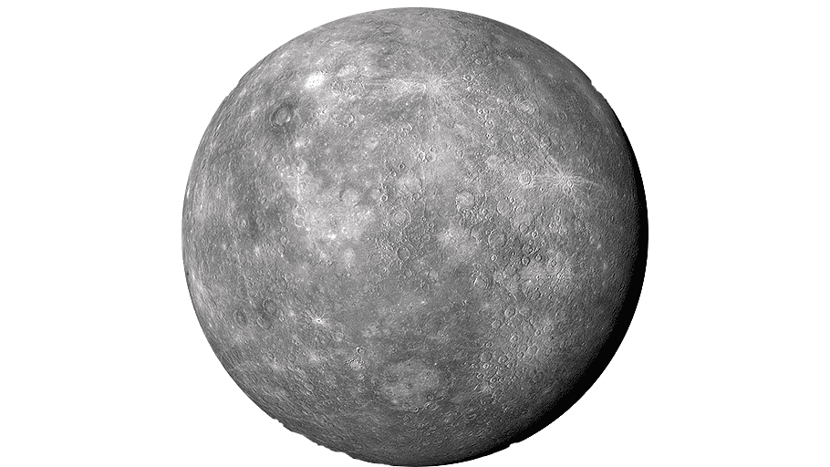
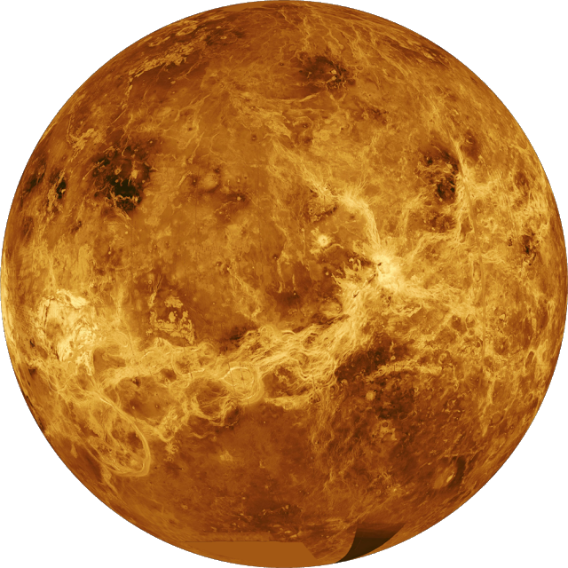
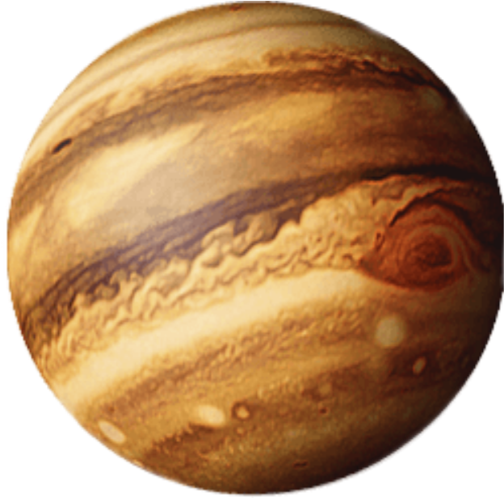
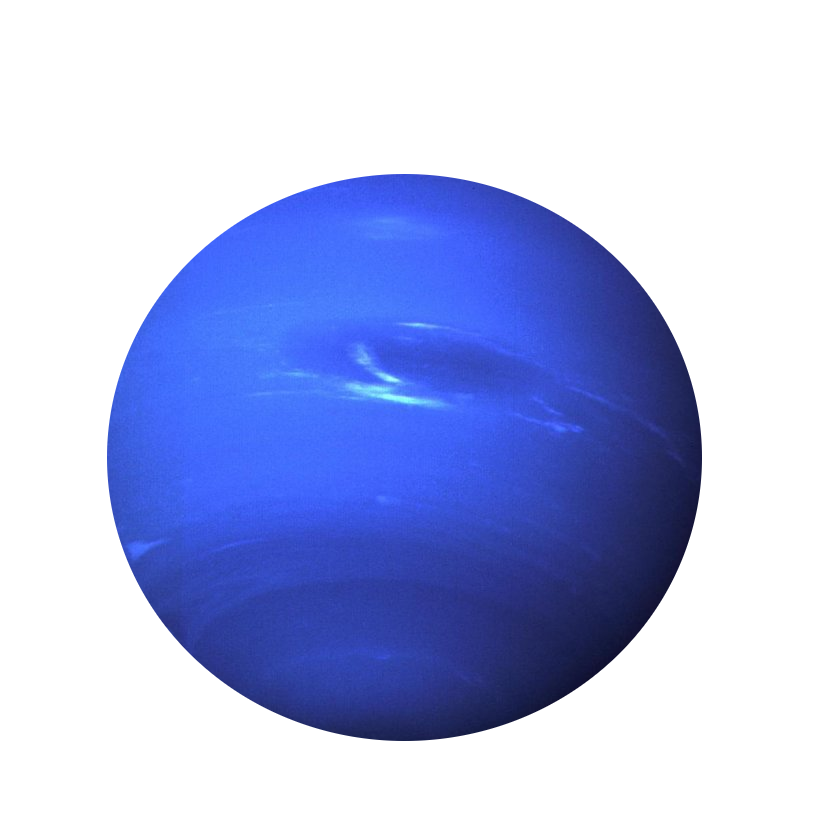

Zonnestelsel
Zon
De zon is de ster in ons planetenstelsel. Hij weegt 1989 quadriljoen ton en bestaat voornamelijk uit waterstof en een beetje helium. De Zon is direct of indirect verantwoordelijk voor het daglicht en voor het overgrote deel van de warmte op aarde.
Mercurius
Er is op Mercurius geen atmosfeer of water. De planeet heeft een rotsachtig oppervlakte. Mercurius ligt het dichtst bij de zon van alle planeten. De temperatuur kan wel tot 167°C hoog worden.
Venus
Het oppervlak van Venus wordt bedekt door dikke wolken, daarom schijnt er nooit licht van de zon op de bodem. Venus is ongeveer even groot als de aarde, maar de luchtdruk aan het oppervlakte is wel 90 keer zo groot. De gemiddelde temperatuur is rond de 450°C.
Aarde

Zie Aarde
Mars

Op mars is het best koud. Overdag kan de temperatuur oplopen tot even onder nul. 's Nachts daalt de temperatuur tot -70°C. Het regent nooit op mars. Af en toe komen er een paar wolken en wat mist voor, verder is de planeet heel droog.
Jupiter
Jupiter is de allergrootste planeet in ons zonnestelsel. De planeet heeft zestien manen en is omgeven door een ringvormige band van stof. Manen zijn bollen die in een baan om de planeet. Jupiter bestaat uit vloeistoffen en gassen. Ook is de planeet erg koud door de afwezigheid van zonlicht.
Saturnus

De op een na grootste planeet in ons zonnestelsel is Saturnus. Het heeft een harde kern met daar omheen ijs en waterstofgas. Saturnus heeft meer manen dan andere planeten, maar onduidelijk is hoeveel er zijn. Maar astronomen denken dat het er meer dan twintig zijn.
Uranus

Net als Saturnus heeft ook Uranus een harde kern daar omheen ook een ook ijs en gassen. De blauwgroene atmosfeer bestaat uit gassen zoals methaan, waterstof, helium. De gemiddelde temperatuur op Uranus is -214°C.
Neptunes
Neptunes is ongeveer net zo groot als Uranus. Hij is vooral bekend om zijn ongelofelijke lage temperatuur. De gemiddelde temperatuur is namelijk -235°C.
Pluto

Pluto is een bijzonder geval, het was eerst wel een planeet. Nu niet meer, omdat hij te klein is. Het wordt nu geclassificeerd als dwergplaneet. Met een middelbare temperatuur van -230°C is het de op een na koudste planeet in ons zonnestelsel. De planeet heeft een maan.